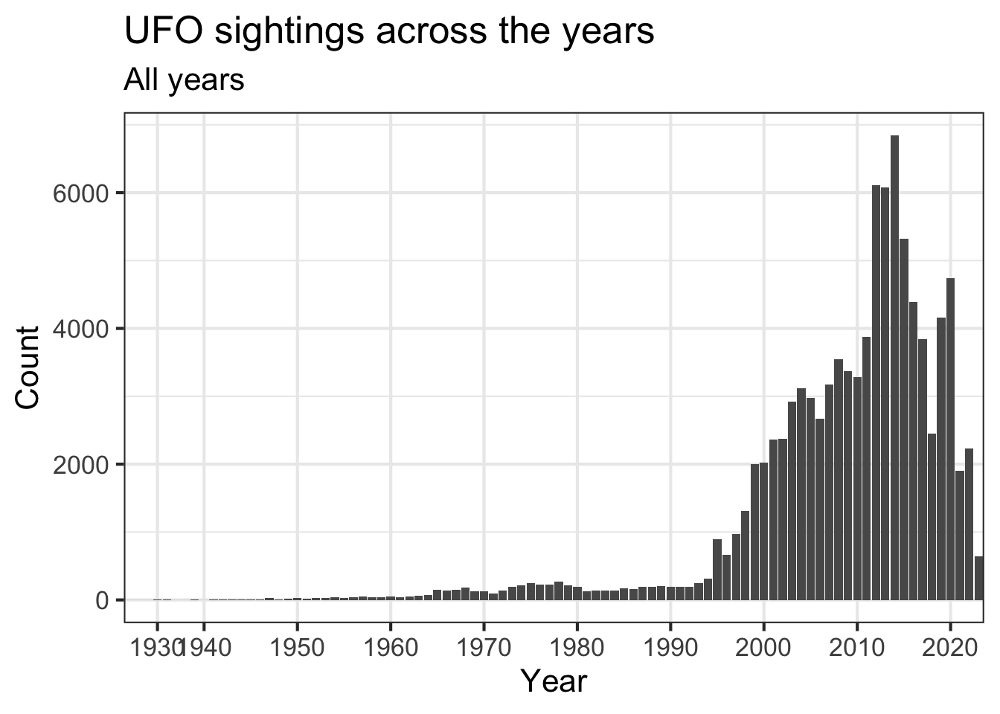

require(tidyverse)
# Read in with tidytuesdayR package
# Install from CRAN via: install.packages("tidytuesdayR")
# This loads the readme and all the datasets for the week of interest
# Either ISO-8601 date or year/week works!
#### Load## --- Compiling #TidyTuesday Information for 2023-06-20 ----## --- There are 3 files available ---## --- Starting Download ---##
## Downloading file 1 of 3: `ufo_sightings.csv`
## Downloading file 2 of 3: `places.csv`
## Downloading file 3 of 3: `day_parts_map.csv`## --- Download complete ---## --- Compiling #TidyTuesday Information for 2023-06-20 ----## --- There are 3 files available ---## --- Starting Download ---##
## Downloading file 1 of 3: `ufo_sightings.csv`
## Downloading file 2 of 3: `places.csv`
## Downloading file 3 of 3: `day_parts_map.csv`## --- Download complete ---## Rows: 96429 Columns: 12
## ── Column specification ──────────────────────────────────
## Delimiter: ","
## chr (7): city, state, country_code, shape, reported_duration, summary, day_...
## dbl (1): duration_seconds
## lgl (1): has_images
## dttm (2): reported_date_time, reported_date_time_utc
## date (1): posted_date
##
## ℹ Use `spec()` to retrieve the full column specification for this data.
## ℹ Specify the column types or set `show_col_types = FALSE` to quiet this message.
## Rows: 14417 Columns: 10
## ── Column specification ──────────────────────────────────
## Delimiter: ","
## chr (6): city, alternate_city_names, state, country, country_code, timezone
## dbl (4): latitude, longitude, population, elevation_m
##
## ℹ Use `spec()` to retrieve the full column specification for this data.
## ℹ Specify the column types or set `show_col_types = FALSE` to quiet this message.
## Rows: 26409 Columns: 12
## ── Column specification ──────────────────────────────────
## Delimiter: ","
## dbl (2): rounded_lat, rounded_long
## date (1): rounded_date
## time (9): astronomical_twilight_begin, nautical_twilight_begin, civil_twilig...
##
## ℹ Use `spec()` to retrieve the full column specification for this data.
## ℹ Specify the column types or set `show_col_types = FALSE` to quiet this message.## here() starts at /Users/au339660/Library/CloudStorage/OneDrive-Aarhusuniversitet/Dokumenter/Gemt fra undervisning/Advanced R/rmarkdown-website-template#unlike on the website there this data set says nobody have images.
ufo_sightings %>%
ggplot(aes(has_images, fill = has_images)) +
geom_bar() +
theme_bw() +
labs(title = "Images of the sighting",
subtitle = "unlike on the website there this data set says nobody have images")# simplifying day times, because who knows what nautical v astronomical v civil dusk/dawn is
ufo_sightings2 <- ufo_sightings %>%
separate(day_part,into = c("remove",
"day_part"),
sep = " ",
fill = "left") %>%
select(-remove) %>%
mutate(day_part = factor(day_part,
levels= c("dawn", "morning", "afternoon", "dusk", "night"),
labels= c("Dawn", "Morning", "Afternoon", "Dusk", "Night"))
)
#UFO sightings across part of day
ufo_sightings2 %>% ggplot(aes(day_part, fill = day_part)) +
geom_bar(show.legend = F) +
theme_bw(base_size = 16) +
labs(title = "UFO sightings across part of day",
y = "Count",
x = "Part of day") #Extracting year of the report
ufo_sightings2<- ufo_sightings2 %>% mutate(year = str_extract(reported_date_time_utc,"^\\d{4}"))
# UFO sightings across the years
ufo_sightings2 %>% ggplot(aes(year)) +
geom_bar() +
theme_bw(base_size = 16) +
scale_x_discrete(breaks = seq(1900, 2023, 10)) +
# scale_x_discrete(guide = guide_axis(n.dodge=3)) +
labs(title = "UFO sightings across the years",
subtitle = "All years",
y = "Count",
x = "Year")
# UFO sightings across the years
ufo_sightings2 %>%
filter(year >1990) %>%
ggplot(aes(year)) +
geom_bar() +
theme_bw(base_size = 16) +
scale_x_discrete(breaks = seq(1990, 2023, 5)) +
labs(title = "UFO sightings across the years",
subtitle = "since 1990",
y = "Count",
x = "Year")#Duration of sightings in seconds through out the day
ufo_sightings2 %>% ggplot(aes(day_part, duration_seconds , fill = day_part)) +
geom_point(show.legend = F) +
geom_boxplot(show.legend = F) +
scale_y_log10() +
labs(title = "Duration of sightings in seconds throughout the day",
y = "Duration in seconds \nlog scale",
x = "Part of day") +
theme_bw(base_size = 16)## Warning: Transformation introduced infinite values in continuous
## y-axis
## Transformation introduced infinite values in continuous
## y-axis## Warning: Removed 2 rows containing non-finite values
## (`stat_boxplot()`).# ufo_sightings2 %>% filter(country_code == "DK") %>% view()
dk <- ufo_sightings2 %>% filter(country_code == "DK") %>%
mutate(muni = case_when(state == "South Denmark" ~ "syddanmark",
state == "Capital Region" ~ "hovedstaden",
state == "North Denmark" ~ "nordjylland",
state == "Zealand" ~ "sjaelland",
state == "Central Jutland" ~ "midtjylland"
))
# UFO sightings in by region Denmark
dk %>% group_by(muni) %>%
summarize(n = n()) %>%
plotDK::plotDK(.,
id = "muni",
plotlevel = "region",
value = "n",
show_missing = T) +
binned_scale(aesthetics = "fill",
scale_name = "stepsn",
na.value = "#c9cccf",
palette = function(x) rev(c("#D53E4F",
"#FC8D59",
"#FEE08B",
"#99D594",
"#3288BD")),
breaks = c(1,2, 4,6, 8),
limits = c(0,8),
show.limits = TRUE,
guide = "legend",
name = "Count"
) +
labs(title = "UFO sightings in Denmark by region")counts <- ufo_sightings2 %>% group_by(year) %>% summarize(n = n())
counts## # A tibble: 92 × 2
## year n
## <chr> <int>
## 1 1925 1
## 2 1928 1
## 3 1929 1
## 4 1930 2
## 5 1931 2
## 6 1934 1
## 7 1937 1
## 8 1939 2
## 9 1940 1
## 10 1941 2
## # ℹ 82 more rowssum(counts$n
)## [1] 96429# ufo_sightings2 %>% filter(summary %in% str_detect(summary, "whisper"))